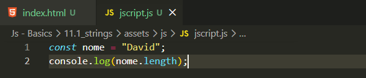
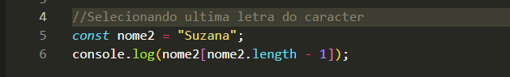

String e Caracteres
Intro
Aqui iremos nos aprofundar um pouco em tipos de dados strings.
Aqui iremos nos aprofundar um pouco em tipos de dados strings.
Quando queremos saber a quantidade de caracteres de uma determinada variável, podemos utilizar o length. Ele nos ajuda a verificar quantos caracteres existem em um dado que estamos utilizando.
Nesse exemplo iremos usar uma variavel com um nome, ficando da seguinte forma let name = "David";, feito isso podemos fazer utilizacao do length para verificar a quantidade de caracteres que essa variavel possui, lembrando que se inicia do 0.
Para utilizar o length, basta colocar a variável desejada seguida de um ponto (.) e depois length. Exemplo: console.log(nome.length).

Para podermos estar selecionando um caractere especifico em nossa variavel podemos por exemplo fazer da seguinte forma. console.log(nome[0]); dessa forma sera selecionado o D, mas as vezes se tivermos um muitos caracteres, podemos deixar isso mais facil com utilizacao do length por exemplo console.log(nome[nome.length - 1]); dessa forma ja ira nos mostrar sempre a ultima letra do valor da variavel sem precisarmos alterar o codigo.
